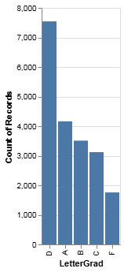
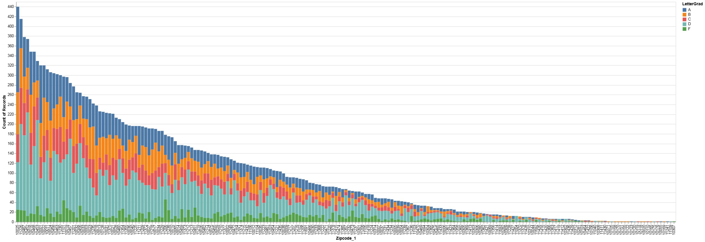

Charts and Graphs - Building Energy Score Data
Data investigations on NYC Building Energy Scores.
Letter Grade Breakdown
This chart represents buildings (Count of Records) in all 5 boroghs of New York by Enegery Score letter grades (A-F). The majority of buildings have a D grade with over 7,500 graded buildings recieving this score. While this is not the most optimistic result in terms of energy efficiency in NYC buildings, the lowest category by far is buildings receiving an F score.

EnergyStar vs Total Floor Area
This chart was an attempt to see if there was any correlation between the total floor area (Shape_Area) and Energy Score (EnergyStar).The question that inspired this chart was whether having a larger building makes it more difficult to properly retrofit and maintain it, and by exention more difficult to recieve a high Energy Score. There does not appear to be any correlation.
.png)
Letter Grade by Tax Class
This chart investigates the ratio of building letter grade by tax class (Tax_Class). While all tax classes have a majority of D rated buildings, tax class 2 has the lowest ratio of F graded building. Tax class 0 has the highest ratio of F graded buildings which is surprising becuase buildings that are not yet assessed for property tax purposes because tax class 0 often means that the buildings are still under construction or not yet ready for occupancy. I would have expected new builds to have the lowest amount of F graded buildings.
.png)
Letter Grade by Borough
This chart shows the break down of buildings color coded by letter grade (LetterGrad) by each borough (Boro_Lablel). Manhattan has by far the smallest ratio of F grade buildings, perhaps due to its building stock have more new builds or avalible wealth to retrofit buildings in comparison to the Bronx or Brooklyn.
.png)
Letter Grade by Zip Code
This chart shows the breakdown of buildings (Count of Records) by letter grade within each zip code (Zipcode_1) of New York City. This bar chart shows zip codes in order of number of buildings, but upon closer inspection the breakdown of letter grades in each zip code reveals some stand out zip codes. For example, 11236 and 11103 have almost no A graded buildings. 11206 stands out on the other end of the spectrum with a particularly high percentage of F graded buildings.
